Minecraft 僵尸刷怪箱陷阱 (Monster Spawner Trap)
从原理上讲解刷怪箱陷阱，以及建造方法，包括如何分离僵尸村民
经验塔那一部分是用的水电梯，当然也可以使用活塞窒息法等
选择水电梯的主要原因是无脑操作，你只需等待怪物落下来，然后杀死即可，顺便也容易理解制作起来也简单
整体外观如下图
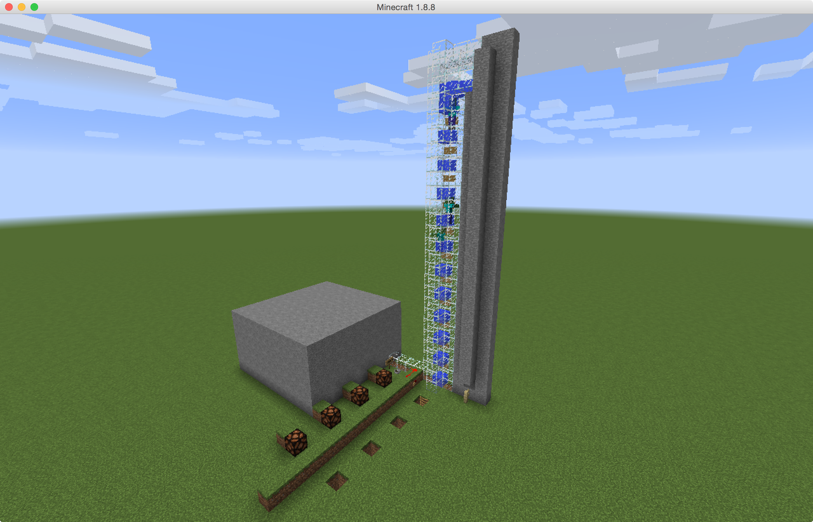
合着下面的讲解看地图更容易理解
地图下载：https://www.dropbox.com/s/z4u0q7c8h1vexcx/2015-09-26-MonsterSpawnerTrap-www.dreamxu.com%20.zip?dl=0
获取刷怪箱
如果你想在创造模式下试验，获取刷怪箱是第一步
我们使用如下命令
/give [用户名] mob_spawner <数量> 0 {BlockEntityTag:{EntityId:"<实体字母ID>"}}
举个具体的例子，例如获取一个僵尸刷怪箱
/give HS66BI mob_spawner 1 0 {BlockEntityTag:{EntityId:"Zombie"}}
刷怪范围
根据 Wiki 上所讲述的：http://minecraft-zh.gamepedia.com/刷怪箱
刷怪箱可在空气中生成怪物，且刷怪范围为 8 * 8 * 3, 代码如下
// 这份伪代码基于 Minecraft 1.7.10 反编译出的源文件
spawnRange = 4
X = Spawner.x + random(spawnRange*2)-spawnRange;
Y = Spawner.y + random(3)-1;
Z = Spawner.z + random(spawnRange*2)-spawnRange;
我画了个图，描述了代码中的刷怪范围
-
垂直方向上的范围，因为僵尸高 2 格，所以实际垂直范围为 4,
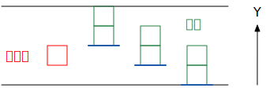 -
水平方向上的范围，红色为刷怪箱
你可能会疑惑刷怪箱为何是在中心右上方？
因为在 Minecraft 中，方块的坐标是方块八个顶点中 x, y, z 坐标最小的点，即图中绿色的点
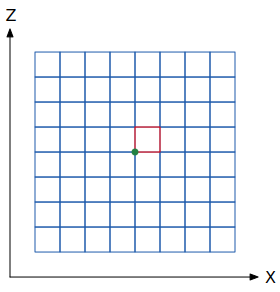
刷怪条件
- 上述刷怪范围
- 亮度 7 或以下
- 玩家距离刷怪箱 16 个方块内
- 刷怪箱周围
17 * 9 * 17的空间存在的僵尸少于 6 个，如果大于等于 6 个则不会刷怪
满足了以上四个条件，刷怪箱可无限刷怪（如果挂机一天肯定会被「噁」心死😜）
建造
内部的封闭空间
满足条件一和条件二
虽说僵尸刷怪范围是 8 * 8 * 4, 但是还要考虑到最下面一层放水，旁白一排也要放水，所以干脆挖 9 * 9 * 5 空间好了，正中间是刷怪箱
并且将这个空间封闭，满足条件二（亮度要求）
具体如下图所示：
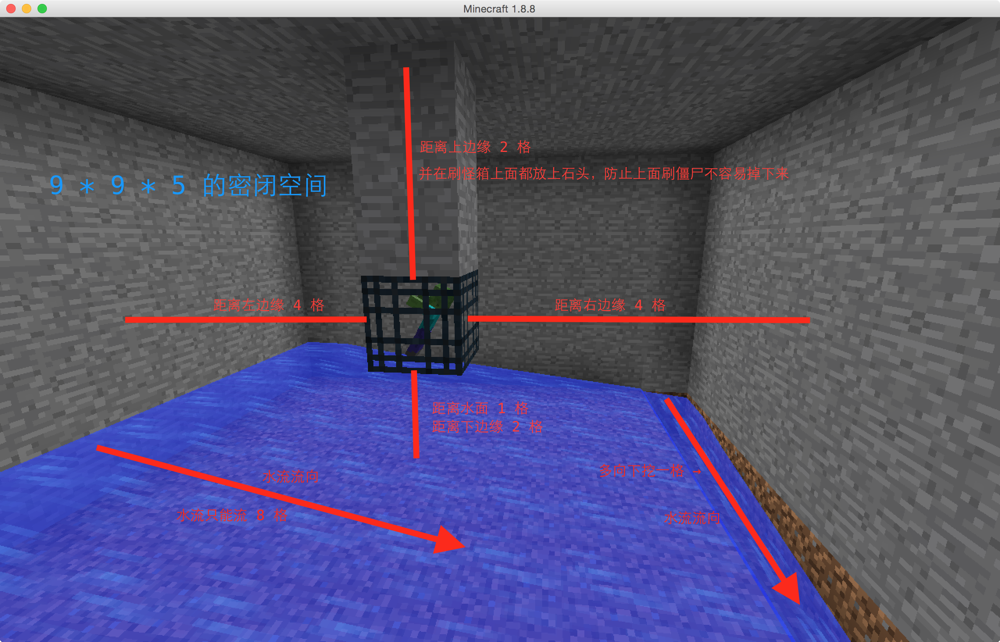
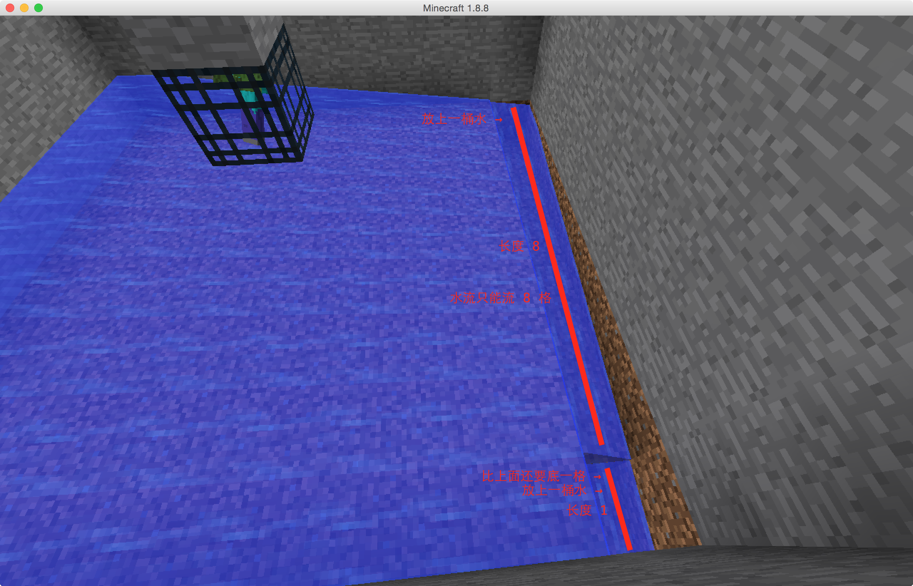
水电梯部分
满足条件四
我们将水电梯建在刷怪箱周围 17 * 9 * 17 的空间范围之外，为了最大化刷怪。而且也要点亮 9 * 9 * 5 到 17 * 9 * 17 的空间，防止刷怪
如下图，稍微远离刷怪箱（其实还另有目的，下面我们会讲到，分离僵尸村民）
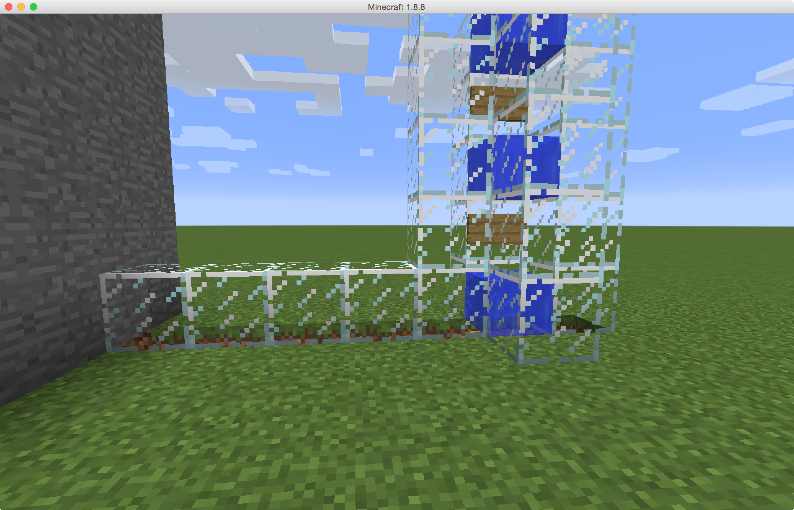
水电梯的起点处可这样设计，不会卡住僵尸，也尝试过其它方式，还是这个最顺畅
放岩浆的目的是用来杀死小僵尸，因为小僵尸高度是 1, 如果不将其分离的话会卡住水电梯
当然你也可以制作岩浆陷阱获取掉落物品，甚至可以收集小僵尸
注意：使用的过程中发现如果小僵尸骑着鸡经过这里，小僵尸会瞬移出来，应该是个 Bug, 如果你在这里挂机的时候小僵尸跑出来了，你会被打死的，所以建议挂机的时候把自己围住
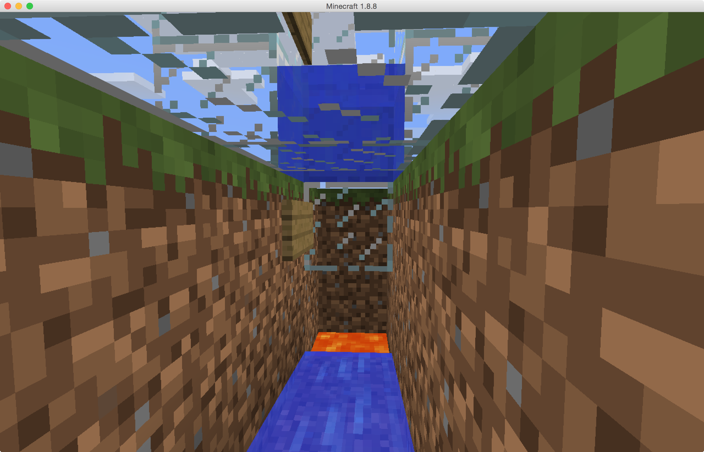
水电梯的摔落系统
我们先看伤害公式
跌落伤害值 = 跌落的方块数 - 3
僵尸血量为 20, 所以我们让僵尸摔落 22 格（即摔落坐标相差 22），使其为最少血量
水电梯摔落处的设计如下图
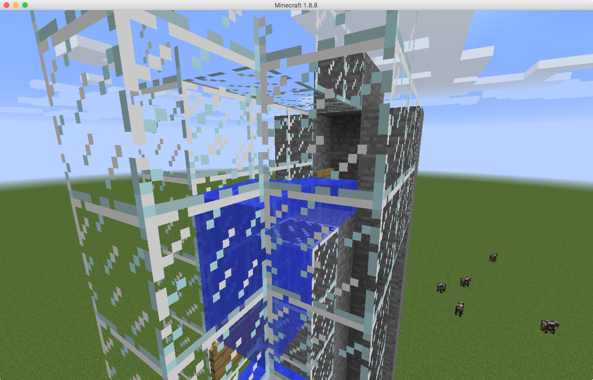
僵尸与僵尸村民的分离
原理：利用活塞和粘性活塞将水流分流
具体如下图所示
-
这是拉上拉杆时的状态，普通的经验塔模式
注意：如果使用普通活塞会卡住僵尸，请都使用粘性活塞

-
这是不拉拉杆时的状态，用于捕捉僵尸
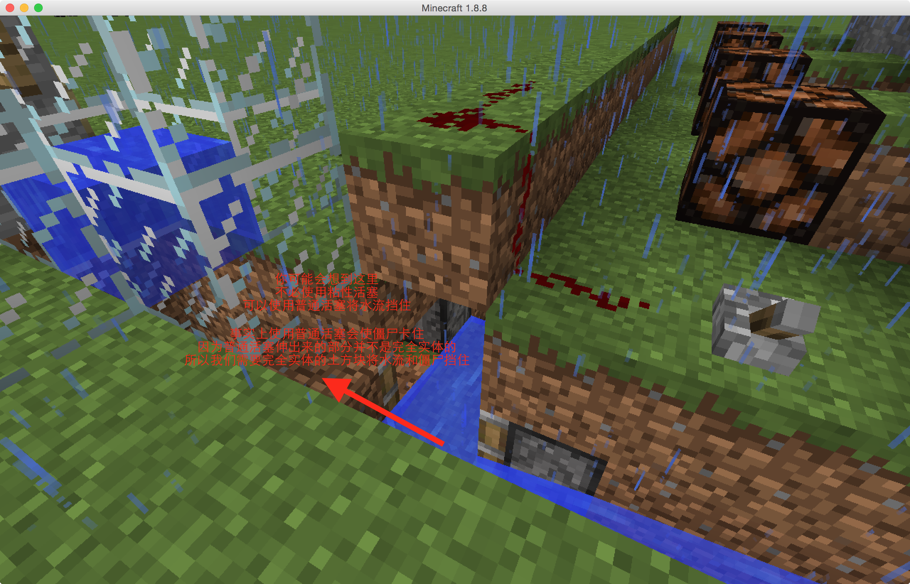
僵尸村民的捕获
捕获装置，活板门陷阱
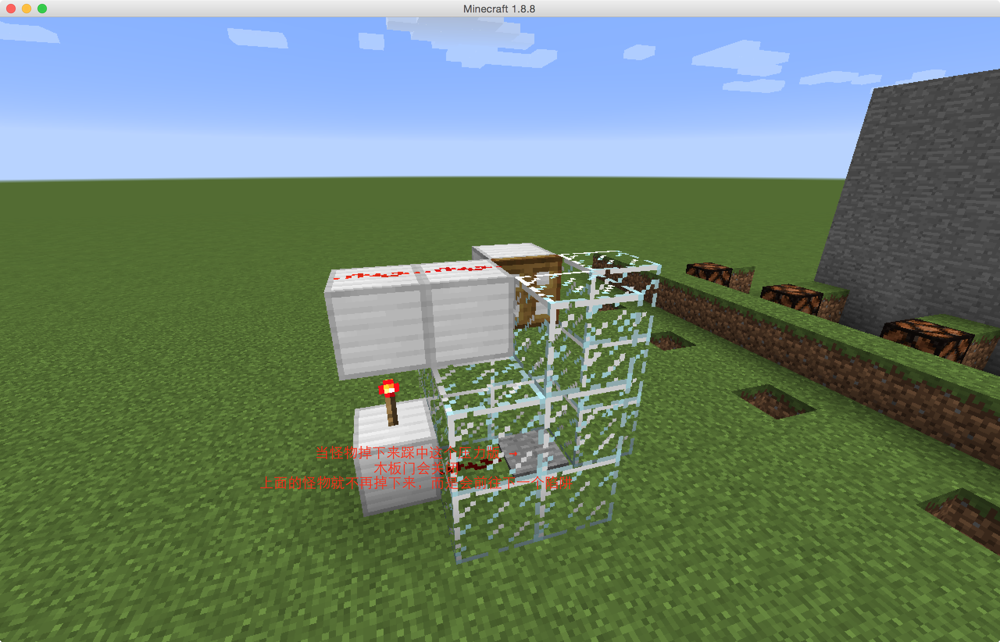
利用一系列的活板门陷阱，有多少陷阱，就能一次捕获多少僵尸
为了展示将顶部去掉了，陷阱组是需要封顶的，防止僵尸乱跳
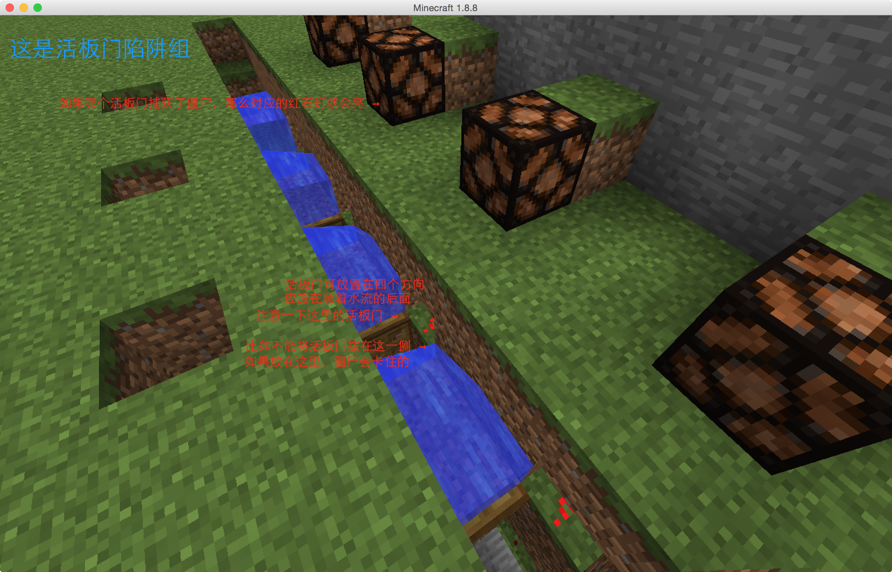
本教程到此结束了
写教程真的挺费时间的，相对来说建造地图所花的时间要少。不过也没啥关系，写也是一件很享受的事情